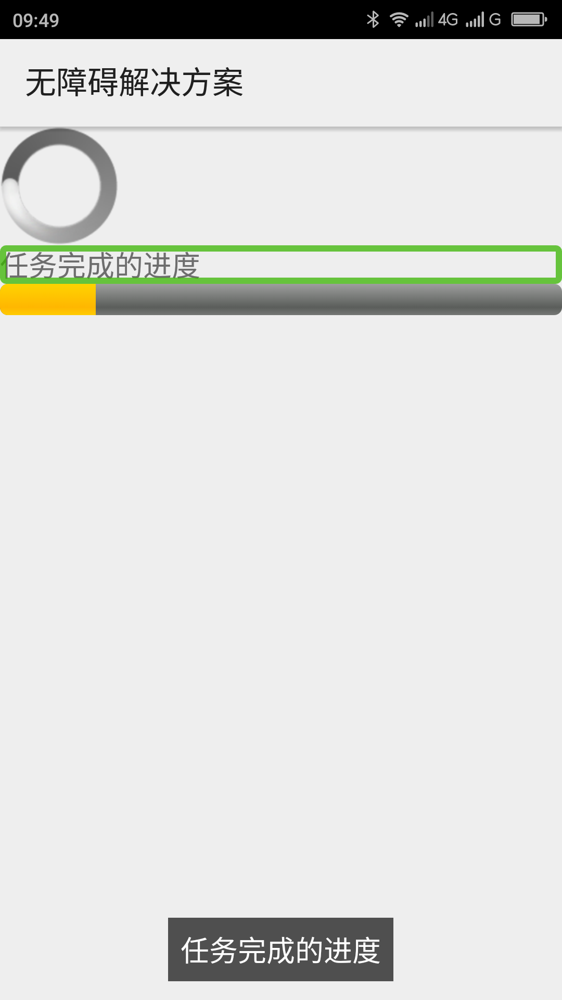
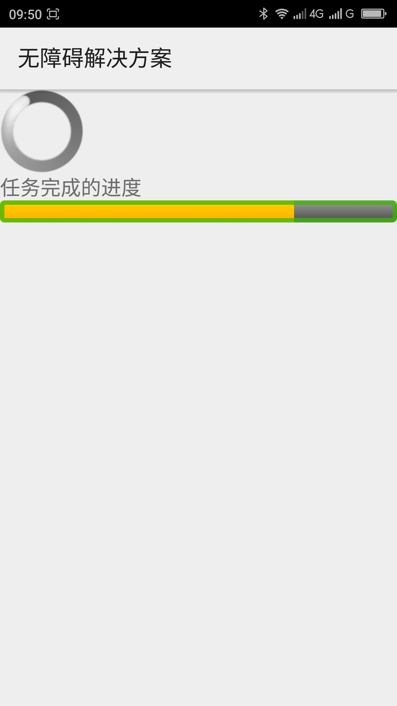

用AccessibilityDelegate使标准的进度条进度更新有声音提示____20160523
【问题描述】
Android系统的标准进度条（ProgressBar）在默认的情况下没有焦点，当进度条是可以显示进度的时候进度改变也没有提示。这样的话屏幕阅读器用户很难知道执行的任务完成的进度情况，如当用户在下载歌曲的时候用一个进度条（ProgressBar）提示下载进度，这时用户就很难知道当前下载的进度了。
【问题解决方案描述】
在使用标准控件进度条（ProgressBar）的时候，使用没有进度的进度条时，任务在执行的时候给进度条添加替代文本(android:contentDescription)并使其有焦点，这样用户能浏览到进度条且根据替代文本知道任务正在执行，当任务完成之后把进度条的替代文本设置为空并使其没有焦点；当使用有进度提示的进度条的时候用setAccessibilityDelegate()方法给控件添加View.AccessibilityDelegate并重写此类中的onInitializeAccessibilityNodeInfo()方法，在此方法中利用AccessibilityNodeInfo.RangeInfo类给控件添加进度的提示，然后必须把此控件设置为有焦点，在这种情况下TalkBack会发出从低到高的声音来提示进度的变化。
注： 有进度的进度条用AccessibilityNodeINfo.rangeInfo添加进度提示之后不要添加替代文本，如果添加了替代文本TalkBack会一直朗读替代文本，这样的体验非常不好。 用AccessibilityNodeInfo.RangeInfo添加进度提示之后必须让进度条有焦点TalkBack才能发出从低到高的进度提示声音。
【解决方案】
下面的代码实现了当进度在动的时候，没有进度提示的进度条有焦点有提示文本；有进度提示的进度条能根据进度的变化发出高低不同的声音，进度条快满的时候声调高。（TalkBack下测试过）
复制内容
【前后效果图对比】
|  |  |
| 优化前，进度条无焦点，无声音提示； | 优化后，进度条有焦点，聚焦时，有声音提声音提示，进度越大，声调越高； |
【扩展】
【附1】 MainActivity.xml布局代码